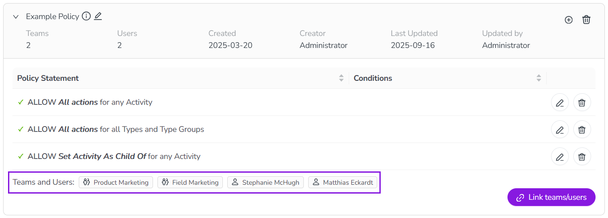

Create and configure policies and statements
Access control policies are the basic organizational unit of activity access controls. Policies act as containers for access control statements, and are also used to apply those statements to specified users.
To set up access controls, you:
Create policies to contain a set of access permissions (statements)
Add statements to a policy to define specific access permissions
Link users or teams to a policy to apply its permission to those users
Create access control policies
You can create as many access control policies as you need. Policies have no effect until they contain at least one valid statement and are linked to at least one user or team.
Create an access control policy
In the Activities section, click
 Settings.
Settings.In the Activity Configuration menu, click Access Control > Policies.
On the Policies page, click + Create Policy. The Create Policy dialog opens.
Enter a name for the policy into the Name field.
This field is required.
The policy name is displayed prominently on the Policies page. We recommend choosing a name that briefly describes the purpose or scope of the policy for easy identification at a glance.
Optional: Enter a brief description of the policy (such as its intended purpose) into the Description field.
You can enter a maximum of 100 characters into this field.
The policy description is displayed as a tooltip beside the policy name on the Policies page.
Click Save to finish creating the new policy.
The Create Policy dialog closes and the Policies page is displayed, where the newly created policy is displayed at the bottom of the list.
You have created a new policy. Next, you can add statements to the policy.
Add statements to an access control policy
Statements define the scope of permissions covered by a policy. Each statement consists of four properties:
- Effect (required)
Specifies what effect the statement has when it is applied, for example that the statement allows the user to perform the specified action on the specified resource.
- Resource (required)
Specifies the type of Campaign Management resource the statement applies to, for example all or specified activity types.
- Action (required)
Specifies the resource-based action that the statement applies to, for example viewing an activity's details.
- Conditions (Optional)
Specifies additional resource-based conditions to further define the statement's scope, for example only activities that have a specified attribute value.
For example, a statement might allow (effect) a user to view (action) any activity (resource) which has the activity type "Tactic" (condition).
You can add as many statements to a policy as necessary. When evaluating the policies that apply to a user, the access control system adds the permission scopes from all applicable policies together, and applies the sum to the user.
- Example
A user has two applicable policies: one policy grants full access to a resource, while the other policy does not contain any statements about that resource.
The second policy is effectively the same as the user having no access to the resource (under the "deny by default" principle). However, the user would still have access to the resource through the first policy, because the effect of multiple policies is additive, and the user receives the sum of permission scopes.
Add a statement to an access control policy
In the Activities section, click
Settings.In the Activity Configuration menu, click Access Control > Policies.
On the Policies page, find the policy you want to add a statement to. On the policy, click Add statement. The Create Statement dialog opens, with the Statement Editor tab displayed.
Use the Resource menu to select the resource type that the statement applies to.
For more information on the available resource types, see Statement properties reference.
Optional: By default, the Effect toggle is set to Allow. To create a statement that denies access, click the toggle to switch it to the Deny setting.
Use the Action menu to select the action that the statement applies to.
For more information on the available actions, see Statement properties reference.
Optional: To add conditions to the statement, use the Conditions menus to select the condition basis:
Select the condition basis. You can specify conditions based on attribute values, activity type, or activity type group.
For more information on the available condition types, see Statement properties reference.
Select the condition operator. You can choose between:
- Is
Must match only the specified value.
- Is one of
Must match at least one of the specified values.
- Is not
Must not match the specified value.
Select the value.
If you chose the operator Is one of, you can select multiple values.
Optional: Click Add Condition to specify additional conditions. Repeat the previous steps to configure them.
Click Save to finish creating the statement.
The Create Statement dialog closes and the Policies page is displayed.
The newly created statement appears in the expanded view of the policy where it was created (click  Expand on the policy to view its details and statements).
Expand on the policy to view its details and statements).
You have added a statement to a policy. Repeat these steps to add additional statements, if needed. Next, you can put the policy and its statements into effect by linking users or teams to the policy.
Apply access control policies to users and teams
To apply the statements (permissions) contained in an access control policy to users in your Uptempo environment, you must link users to the policy.
You can choose to link users to a policy either individually, as part of a team (linking a team links all users within the team), or both. You can link as many users or teams to a policy as needed. You can link (or unlink) users at any time, and the change in access will take effect immediately.
Link users or teams to an access control policy
In the Activities section, click
Settings.In the Activity Configuration menu, click Access Control > Policies.
On the Policies page, find the policy you want to link a user or team to. On the policy's entry, click
 Expand to view its details.
Expand to view its details.In the expanded view of the policy, click Link teams/users. The Link Users/Teams dialog opens.
Select the users you want to link to the policy. You can link teams (to link all users belonging to the team), individual users, or both:
This option links all users on a specified team to the policy.
Click the Select one or more teams field.
Select the team to link to the policy from the menu. The selected team is added to the Select one or more teams field.
Repeat these steps to select additional teams.
To remove a selected team, click
 Remove on their entry in the Select one or more teams field.
Remove on their entry in the Select one or more teams field.This option links a single specified user to the policy.
Click the Select one or more users field.
Select the user to link to the policy from the menu. The selected user is added to the Select one or more users field.
Repeat these steps to select additional users.
To remove a selected user, click
Remove on their entry in the Select one or more users field.Click Link Users to link all selected users to the policy.
The Link Teams/Users dialog closes and the Policies page is displayed, where the added users or teams are listed in the expanded view of the policy.
{kind=link}

You have linked users to a policy, and the policy's statements will take effect for the linked users immediately.
Verify your access control configuration
To ensure that access control policies are working as intended, we recommend using the following procedure to test newly created policies (or planned changes to existing policies) before enabling them for users in production:
Test access control policies
Create a special "test user" account that is different from your regular (administrator) user account.
Create a new policy and add all required statements to it. This will act as the "draft" version of the new policy.
For visibility, we recommend naming the new policy in a way that clearly marks it as a "draft" version.
If you want to make changes to an existing policy's statements, recreate the existing policy's statements in the new "draft" policy, along with any changes you want to implement — do not make changes to the existing policy at this stage.
When you are ready to test the "draft" policy, link only the "test user" to it.
Sign in to your Uptempo instance as the "test user", and test the access control policy by interacting with Campaign Management.
When you have confirmed that the policy is working as intended, unlink the "test user" from it.
This helps to prevent problems when you use the "test user" with new policies in the future: if the "test user" is still inadvertently linked to older policies, this can cause unexpected and invalid results during testing (as all linked policies take effect in an additive fashion).
Link users/teams to the "draft" policy to activate it.
At this point, the new policy is no longer in draft, so you should update the name accordingly if applicable.
If you are making changes to an existing policy's statements, switch the users/teams linked to the existing policy over to the new policy (the former "draft" policy). To do this, first link the users/teams to the new policy, then unlink them from the old policy.